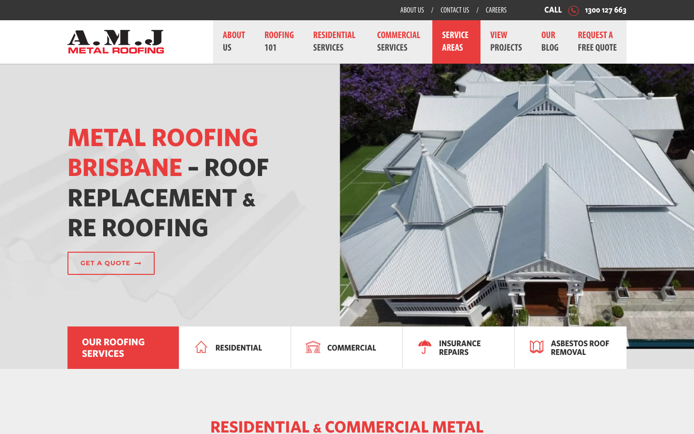
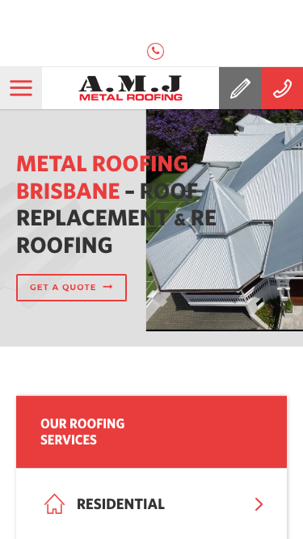

60/100 · moderate_candidate · 行业：roofer · 地区：Brisbane · Google 评价：4.8★ （72 条）
投入分级： C 批量轻触 — 模板邮件 + 报告
PDF 链接，无主动跟进
触发依据： - C · moderate_candidate · audit 60 · 72 评论 4.8★ (未达 B 标准)
下一步行动： 标准模板邮件 + master.md PDF 链接，无主动跟进。等客户回复触发后再投入。
线索来源 · 联系开场可用: - 来源:
Google Places API (官方搜索) - 搜索关键词:
roofer brisbane - 结果排名: 第 2 位 -
首次发现: 2026-05-14 - Batch:
places-roofer-brisbane-202605150200
审计结论： audit_score=60 → moderate_candidate · weakest: gbp 37, visual 50


慢速 4G 加载实景视频（1.6 Mbps · 150ms 延迟 · 4× CPU 节流，模拟真实手机访客的体验）：
The site looks like a real roofing company, but the above-fold design feels heavy, crowded, and short on trust proof for a Brisbane customer ready to call.
新鲜度 5/10 · 信任度 6/10 ·
转化准备度 5/10 · 设计年代
slightly_outdated
值得保留的优点： - The large roof photo clearly shows the type of work being offered. - The phone number is visible in the top-right area on desktop. - The red brand color creates clear recognition across the header and service sections.
技术事实
title=‘# Metal Roofing Brisbane – Roof Replacement & Re Roofing’ contains-name=false contains-niche=false
普通话翻译
你网站的浏览器标签 title 没把业务名字 + 服务关键词写清楚（比如该写「A.M.J Metal Roofing Brisbane - roofer Brisbane」，但目前是泛泛一句）。
对客户的影响
Google 搜索结果里展示的就是这个 title。写不清楚 = 排名靠后 + 即使排上来客户也不知道是不是匹配的服务。SEO 最便宜的修复，但很多本地企业完全没做。
技术事实
no LocalBusiness JSON-LD
普通话翻译
网站没有 LocalBusiness JSON-LD 结构化数据（让 Google / AI 知道你是本地企业、地址、电话、营业时间的标准格式）。
对客户的影响
Google「附近的服务」「Knowledge Panel」「AI Overview」都依赖这类结构化数据。没有 = 即使排名上去也不会出现在右侧 Knowledge Panel 或地图卡片里 — 错失高转化的展示位。AI agent / ChatGPT 引用本地商家时也是基于这些数据。
技术事实
The hero CTA is a thin red outline button reading “GET A QUOTE” on a pale grey background, placed below the large headline.
普通话翻译
首页最重要的“获取报价”按钮太轻，看起来不像主要按钮，容易被忽略。
对客户的影响
很多本地客户只会快速扫一眼页面，通常几秒内决定要不要联系。按钮不明显，会让已经有需求的客户少一步行动，直接减少电话和报价询盘。
正确长啥样
A solid high-contrast red button above the fold, paired with a secondary phone action, both large enough to scan quickly.
Redesign 怎么改
Replace the outlined hero button with a solid red “Get a Free Quote” button and add a nearby phone CTA such as “Call 1300 127 663” in a secondary style.
技术事实
The visible hero area shows a roof photo, headline, navigation, phone number, and service tiles, but no reviews, years in business, licence, warranty, or local proof.
普通话翻译
首页第一屏没有马上告诉客户“我们靠谱”，比如评价、资质、经验年限或保修。
对客户的影响
换屋顶是高价决定，客户会更谨慎。缺少信任信息时，他们更可能返回 Google 去看下一家公司，特别是从 GBP 点进来的陌生客户。
正确长啥样
A compact trust row directly under the headline or CTA with items like star rating, years of experience, licensed and insured, and Brisbane service coverage.
Redesign 怎么改
Add a trust strip in the hero area with Google rating, review count if available, licence or insurance statement, and a short Brisbane-local claim.
技术事实
The header contains a dark top bar, logo area, multiple large menu blocks, a highlighted red “SERVICE AREAS” tab, and a separate phone number area.
普通话翻译
顶部菜单内容太多，客户第一眼不知道最该点哪里。
对客户的影响
本地搜索客户通常目标很直接：看是否可信，然后打电话或询价。选择太多会拖慢决定，增加离开的机会。
正确长啥样
A simpler header with logo, phone number, one strong quote button, and 4-5 clear menu items.
Redesign 怎么改
Collapse secondary links like About Us, Careers, and Blog out of the primary header; keep Services, Projects, Service Areas, phone, and quote CTA prominent.
我们前面那段「慢速 4G 加载视频」是我们这边的实验室结果。这一段是 Google 自己对你网站打的分，包括过去 28 天 真实访客的网络体验数据（CRUX field data）。
Lighthouse 分数（实验室）：
| 维度 | 分数 |
|---|---|
| 性能 (Performance) | 29/100 |
| 可访问性 (Accessibility) | 58/100 |
| 最佳实践 (Best Practices) | 50/100 |
| SEO | 77/100 |
Lab 关键指标： LCP 24.3s · FCP
16.5s · CLS 0.000 · TBT
1597ms
真实用户体验（过去 28 天 CRUX field data）总评：
SLOW
| 指标 | 75% 用户值 | Google 评级 |
|---|---|---|
| LCP（最大内容绘制 p75） | 3.14s | AVERAGE |
| FCP（首次内容绘制 p75） | 2.42s | AVERAGE |
| TTFB（服务器响应 p75） | 2.05s | SLOW |
| CLS（布局抖动 p75） | 0.000 | FAST |
这意味着： 过去 28 天访问你网站的实际用户里，75% 的人遇到的体验就是上面这些数字 — 不是我们测的、是 Google 用真实 Chrome 用户数据统计出来的。
Google 建议的优化项（按节省时间排序，前 4）：
PSI 给的是宏观分数，下面是具体可改的两块：图片格式与 tracker 脚本。
总评： 基本未优化 — redesign 可显著降低图片下载量
具体问题： - [major] 89 张图几乎全是 JPG/PNG，未用 WebP/AVIF — 估算可节省 30-50% 图片下载量 - [minor] 81/89 张图无响应式 srcset — 移动端浪费带宽 - [minor] 72/89 张图未 lazy load — 首屏外的图阻塞主线程 - [minor] 54/89 张图无显式 width/height — 加重 CLS 布局抖动
已识别的 tracker：
| 工具 | 类型 | 请求数 | 字节 |
|---|---|---|---|
| Google Tag Manager | analytics | 8 | 1278.1 KB |
| Meta Pixel | ad_pixel | 2 | 97.3 KB |
| Google Analytics | analytics | 4 | 20.3 KB |
| DoubleClick | ad_serving | 5 | 4.5 KB |
观察： 19 个 tracker 合计加载了 1400 KB —— 这些都是阻塞主线程的脚本，是性能 + 隐私双角度的销售切入点。redesign 时可以建议清理不再使用的 tracker。
客户最常担心的问题：「我重做网站，会不会丢掉 Google 排名？」这一段直接回答。
https://amjmetalroofing.com.au/sitemap_index.xml页面分类：
| 类型 | 数量 |
|---|---|
| service_area_page | 62 |
| 作品集 / 案例 | 57 |
| Blog 文章 | 22 |
| 服务详情页 | 18 |
| 联系 / 报价 | 3 |
| 顶层页面 | 3 |
| 关于 / 团队 | 2 |
| 首页 | 1 |
| 法律 / 隐私 | 1 |
| area_page | 1 |
| 内页 | 1 |
Sitemap lastmod 跨度： 最旧 2018-07-19 → 最新 2026-04-09
Redirect 计划承诺： redesign 上线时我们会附一份 50 条 1:1 redirect 表（旧 URL → 新 URL），保证 Google 已经索引的页面权重无损迁移。已经在 Google 第一二页的关键词不会丢。
长尾覆盖： 强 — 已有 5+ 服务×区域页，长尾流量基础在
现有服务页样本： /roofing-buying-guide/
· /7-mistakes-you-must-avoid-when-replacing-your-roof/ ·
/careers/re-roofing-estimator/ ·
/careers/gutter-fixers-apply/ ·
/metal-roofing-toowoomba/patio-roof/
现有服务×区域页样本：
/colorbond-roof-brisbane-north-northside-southside/ ·
/colorbond-roofing-brisbane-north-northside-southside/ ·
/colorbond-cladding-installation-gold-coast/ ·
/commercial-roof-repair-gold-coast-brisbane-northside-southside/
· /metal-roofing-gold-coast/patio-roof/
none）strong (SPF + DKIM
+ DMARC 齐全)从网站源码识别出来的工具，能帮我们判断这位客户的数字成熟度。
数字成熟度打分： 4 / 6 （高 — 客户懂数字营销，redesign 谈预算时不必从零教育）
客户可能有数月 / 数年的历史数据 + 广告投放受众 sit 在这些 ID 上面。重做时必须用同一套 ID 重新接进新网站，否则等于清零所有累积。
我们 redesign 交付清单会把这些列为「必须 setup 项」。
本地服务的客户在掏钱之前会查这些凭证。缺失 = 客户跳到下一家。
信任分： 25/100
GEO = Generative Engine Optimization。ChatGPT、Perplexity、Google AI Overviews 这些 AI 搜索产品不像传统搜索引擎那样按”关键词排名”工作，它们直接抓取结构化数据并把答案合成给用户。如果你的网站在 AI 抓取这一块做得不到位，等于在生成式搜索时代隐身。
AI 可发现性总分： 45 / 100 — AI agent 抓取部分支持，但关键 schema / 凭证 / FAQ 缺失
localbusiness_schema — Organization JSON-LD
present (LocalBusiness preferred for local services)breadcrumb_schema — BreadcrumbList JSON-LD
presenteeat_business_credentials — 2/4 credentials in
copy: license/QBCC, insuranceeeat_warranty_trust — warranty/guarantee
mentionedjsonld_at_least_one — 4 JSON-LD block(s)
detected on pagellms_txt_present (5 分) — no /llms.txt at
standard pathai_bot_robots_policy (5 分) — robots.txt has no
explicit policy for AI crawlers (GPTBot/ClaudeBot/etc)service_schema (10 分) — no Service JSON-LDfaqpage_schema (10 分) — no FAQPage JSON-LD
(loses AI Overview / featured snippet eligibility)aggregaterating_schema (5 分) — no
AggregateRating JSON-LD (★ rating not shown in search snippets)semantic_landmarks (10 分) — 3 semantic
landmarks present: <nav, <header, <footerfaq_qa_pattern (10 分) — 2 question-style
heading(s) found (Q&A format helps AI extraction)销售切入： 「ChatGPT 现在每月 30 亿次搜索，本地服务用户问『Brisbane 哪家屋顶公司靠谱』，AI 回答时只引用结构化数据完整的网站。你目前在这个新阵地的得分是 45/100。」
注：这一段只给运营内部看，不进入客户报告。 用来判断这个 lead 是不是匹配我们「小网站 / 多批量 / 快上线」的产品定位。
mid —
中型客户，可接但价格要往上提（基础包 + 配置项）报价以上方 建议报价 为准（来自 entity.grade.recommended_pricing / PRODUCT_TIER_TABLE）。本段只用来判断 lead 是否匹配产品定位，不竞争报价。
触发依据： - Google 评价 72 条（≥50，有规模基础） - 网站页面数 171（≥100，中等复杂度） - 已部署 4 个分析 / pixel 工具（高数字成熟度）
-2026-05-11-v1codex_cliGoogle Places · most_relevant (max 5)